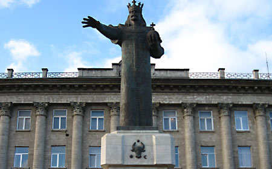

Символ города
Въездной знак Бельц сразу задает образ города и подчеркивает его узнаваемую городскую идентичность.
Город Бельцы
Русскоязычный сайт о Бельцах: атмосфера города, прогулки, жизнь, удобство и полезные контакты.

Въездной знак Бельц сразу задает образ города и подчеркивает его узнаваемую городскую идентичность.
Яркий знак любви к Бельцам стал узнаваемым образом современного городского пространства.
Город сочетает активный ритм, понятную городскую среду и удобство для жителей, студентов и гостей.
Центральные улицы, общественные пространства и спокойные маршруты помогают почувствовать характер города.
Это город, где можно учиться, работать, запускать идеи и оставаться в современном городском ритме.